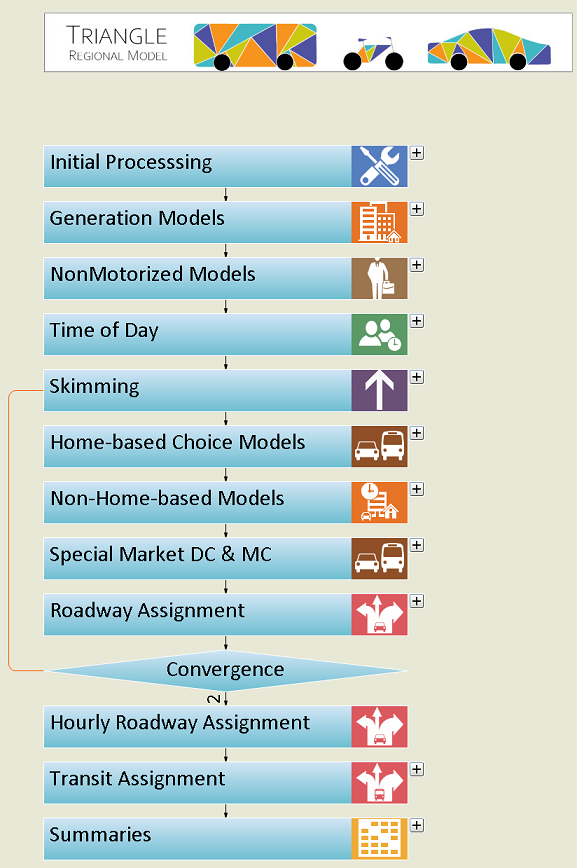

Triangle Regional Model G2
This documentation reflects TRMG2 version 1.0. Later versions of the model may not match the charts and tables exactly due to network and other changes.
For a list of common acronyms used in the documentation, click here.
TRMG2
The Triangle Regional Model Generation 2 (TRMG2) is the latest model in the Triangle. It is a model built from scratch and incorporates many innovations in technique as well as user experience.
Technical Excellence
TRMG2 is a trip-based model, but includes numerous dissaggregate components including a synthetic population, auto ownership model, and decision trees to predict trip generation for each individual.
The aggregate components of the model also represent advancements to the practice of the practice of travel demand modeling. A nested destination choice model allows travelers to first choose a destination district before choosing an individual zone. This choice is informed by robust mode choice and parking choice models. Additionally, non-home-based (NBH) trip models are all informed by home-based models, which provides much more information about where people are traveling and by what mode. This additional knowledge compared to traditional NHB model allows for much more accurate predictions.
After trip generation, TRMG2 treats each of its four time periods independently. Feedback is performed for each period such that assignment travel times are accurately represented in the behavioral models.
User Experience
TRMG2 also greatly improves on user experience. This online documentation along with the wiki-styled User’s Guide allow for quick reference, but the model is designed to be intuitive to use without heavy reading of the documentation.
TRMG2 is written entirely in GISDK, which means no complicated model setup. Instead, after the model is unzipped, the user only needs to drag and drop “trmg2.model” into TransCAD. The model’s flowchart will open and all the relevant code is compiled. The flowchart clearly illustrates the modeling process, and each step can be expanded to see more detail.

Improved user experience also extends to model maintenance and regional collaboration. The model is housed in an open-source GitHub repository. This allows the funding members (Capital Area MPO, Durham Chapel Hill Carrboro MPO, NC Department of Transportation, and GoTriangle) to coordinate and contribute to the model in an organized manner It also makes it easy for model users and regional stakeholders to obtain the model, and they can also provide feedback using GitHub issues.
TransCAD GIS Software, 2022